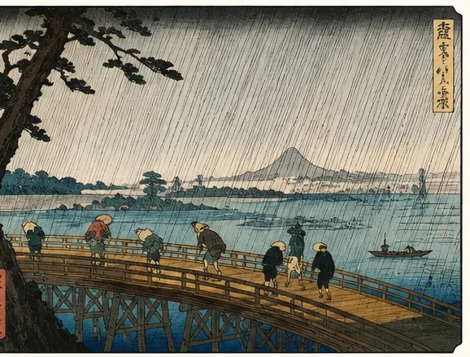

広重は「どこから景色を見ている？」を見る。手前→遠く→天気の順に追う。
広重の風景は、落ち着いていて見やすいぶん、「きれいな景色」で通り過ぎやすい画家でもあります。自分が面白いと思ったのは、何が描かれているかより「自分はどこから見ている？」と考えたときでした。手前の大きなものから遠景へ視線を動かしてみます。
1. 名所の説明図ではなく「その場」を見る
広重には江戸や東海道の名所が多く登場しますが、建物や地形を正確に覚えることが目的ではありません。
雨、雪、夕暮れまで一緒に描くことで、「その日、その時刻の場所」を作っています。
まず「有名な場所だから見る」のではなく、「自分はどこに立たされている？」と考えてみます。高い場所から見下ろしているのか、橋のたもとにいるのか、木の陰から遠くをのぞいているのか。視点の高さを想像するだけで、風景が観光案内から体験へ変わります。
広重の名所絵には、その土地を象徴するものが描かれていても、必ずしも正面から分かりやすく見せるとは限りません。あえて手前の物で一部を隠したり、遠くへ小さく置いたりすることで「そこへ行って偶然見えた」感じが強くなります。
2. 画面の端で大きく切れているものを探す
木の幹、橋、舟などが途中で画面外へ切れることがあります。
全部を見せないことで、その向こうの景色が遠くなり、自分が手前の物のすぐそばに立っている感じが生まれます。
手前の大きな形は、奥の景色を見るための額縁のようにも働きます。画面端で木や橋が切れていると、絵の外にも物が続いているように感じられ、鑑賞者のいる側まで空間が広がります。
美術館では、まず画面の四隅を見て「途中で切れているもの」を一つ探してみてください。そこから奥の小さな景色へ目を移すと、大小の差だけでかなり深い距離が作られていることが分かります。
3. 手前→中景→遠景の順で見る
大きな手前の形から、中ほどの人や橋、さらに山や町へ視線を動かします。
「どこまで遠く見える？」だけでも、画面を旅するように見ることができます。
広重の奥行きは、西洋の遠近法のように一本の消失点だけで読む必要はありません。大きな手前、中くらいの人や建物、小さな山や舟というように、形の大きさを段階的に比べると十分です。
さらに、遠いものほど色が淡くなったり、輪郭が細くなったりする作品もあります。「大きさ」と「色の薄さ」をセットで見ると、紙の平面に何層もの距離ができていることを実感できます。
4. 雨や雪は背景ではなく、画面を動かす
《大はしあたけの夕立》の雨は斜めの線として画面全体を横切ります。傘や人物の動きも、その線によって速く感じられます。
雪なら白い余白、風なら木や着物の傾き。天候がどんな線や形に変換されているかを探します。

雨の線や雪の白は、単なる天気の説明ではありません。雨が斜めに走れば画面全体が同じ方向へ押され、雪が広く残れば音まで吸い込まれたように静かになります。天候が画面のテンポを決めている、と考えると見やすくなります。
人物の傘、裾、歩く速さも合わせて見てください。雨だけを描くのではなく、その雨を人がどう受けているかまで入ることで、温度や風まで想像できる場面になります。
5. 空と水面の「ぼかし」を見る
広重では輪郭線だけでなく、空や水面の色の濃淡も重要です。
上から下へ濃くなる空、遠くほど薄くなる景色。輪郭のない色の変化が距離や時刻を作ります。
浮世絵は「輪郭線と平らな色」という印象が強いですが、広重を見ると色の境目がやわらかく消える場所があります。空の上部だけ濃い、地平線近くが明るい、水面の一部だけ深い青になるなど、ぼかしが時間帯や空気を作ります。
版画では、この微妙な濃淡も摺りの仕事です。実物では、画面を近くで見て色が急に切り替わるところと、ゆっくり変化するところを比べると、線だけではない広重の魅力が見えてきます。
6. 小さな人物が、その場所を身体で教えてくれる
雨の中を急ぐ人、雪道を歩く旅人、橋を渡る人。人物は小さくても、天気や距離を身体で示します。
傘の角度や歩く向きを見ると、その場所の空気まで具体的になります。
小さな人物は、景色の大きさを測る物差しでもあります。同じ橋でも、人が一人立つだけで長さや高さを身体感覚で想像できます。富士や大木がさらに大きく見えるのも、人の尺度が画面に入っているからです。
顔が描き込まれていなくても、前かがみ、傘を傾ける、荷物を背負うといった姿勢には情報があります。「この人は今、寒い？急いでいる？」と考えると、風景の中の時間が動き出します。
広重は「どこから景色を見ている？」を見る。手前→遠く→天気の順に追う。